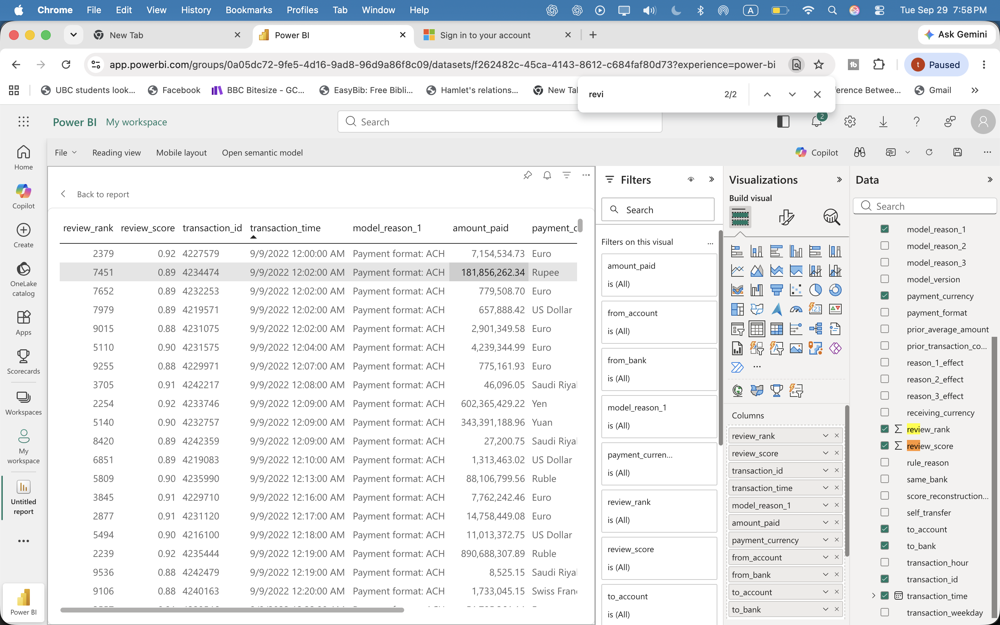
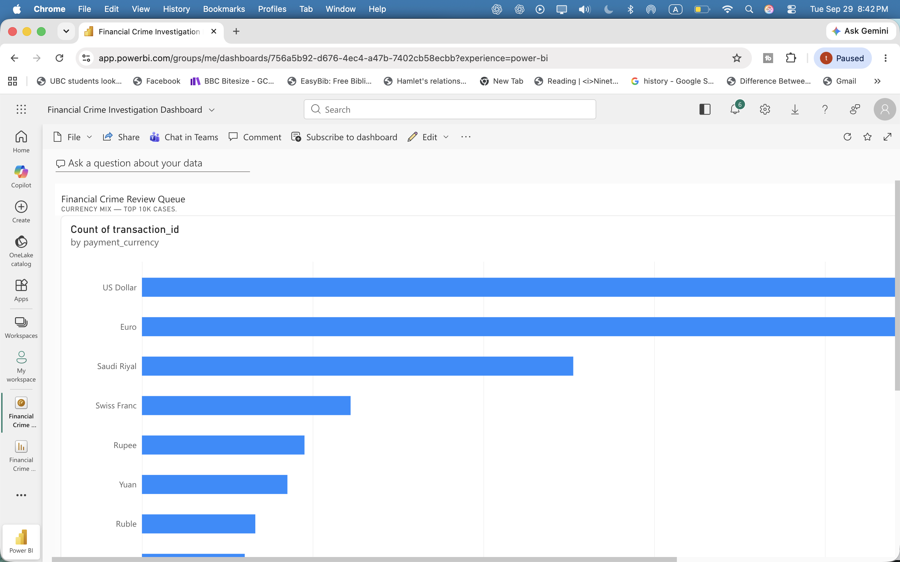

A PROJECT BY TARIK ALANSARI
Financial Crime
Analytics
Which bank payments should an investigator check first? I built a system that puts potentially suspicious payments at the top of a review list—and explains why.
HOW IT WORKS
A clearer starting point for review.
Each transaction is a payment between accounts, with a time, amount, currency, and payment method. The records come from IBM’s simulated banking dataset—not real customers. Most are legitimate; some carry a synthetic money-laundering label for model evaluation.
- 01
Look at the payments
Use SQL to examine amounts, payment methods, and the account’s earlier activity.
- 02
Choose what to check first
A machine-learning model learns from older payments, then orders newer ones by how suspicious they look.
- 03
Explain each flag
The dashboard shows the payment details and which factors raised its score. A person decides what to investigate.
THE RESULTS
A queue built for investigation.
Tap a screenshot to view it larger.

Every case, with a reason.
Explore 10,000 ranked test cases with scores, transaction details, and model explanations.
See the currency dashboard

Cases by currency
A simple dashboard view helps investigators understand how the ranked sample is distributed across payment currencies.
Model details & verified results
Tested on later dates
The class-weighted logistic regression was built with NumPy. Training uses dates before September 8, 2022; validation uses September 8; testing uses September 9 onward. Historical features use earlier calendar days, and laundering labels are excluded from model inputs.
Results at different review capacities
| Cases reviewed | Labels found | Precision | Recall |
|---|---|---|---|
| 100 | 35 | 35.0% | 2.17% |
| 500 | 103 | 20.6% | 6.39% |
| 1,000 | 199 | 19.9% | 12.35% |
| 5,000 | 592 | 11.84% | 36.75% |
The test set contains 863,900 transactions, with 0.1865% positive labels. Precision at 1,000 is about 107× that base rate. PR-AUC is 0.1016 and ROC-AUC is 0.9330.
Data & reporting scope
The IBM HI-Small dataset contains 5,078,345 synthetic transactions, 5,177 positive labels, 15 currencies, and 7 payment formats across September 1–18, 2022. The Power BI report shows the top 10,000 test cases; the currency chart is also saved as a dashboard tile. A separate local browser dashboard supports case filters and explanations.
Current limits
Results describe an 18-day synthetic dataset. Later dates have a higher positive-label rate. The model has no external validation, probability calibration, or real investigator feedback. The screenshots show a saved report in a private workspace.
The data and labels are synthetic. Review scores rank cases for human attention; they are not calibrated probabilities or proof of financial crime.